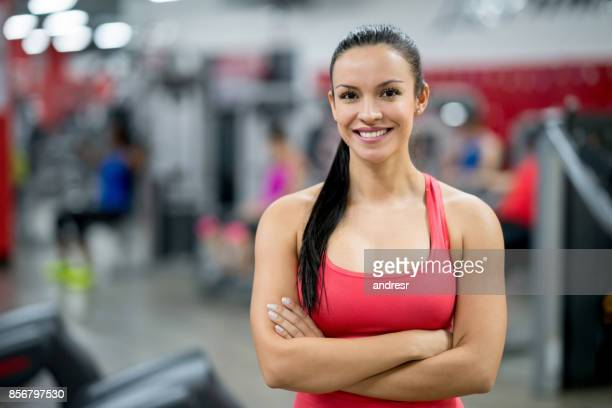

Notícias cidade
Entrevista:
José Almeida
Ele que é professor-doutor universitário, possui 68 anos de idade. Nasceu no dia 23 de Maio de 1954...
Leia mais!Entrevista:
Antônio Azevedo
Ele que é diretor de marketing na empresa de telefonia Claro, possui 44 anos de idade...
Leia mais!Entrevista:
Mariana Souza

Ela que é Social Media, possui 25 anos de idade. Nasceu no dia 5 de Junho de 1997...
Leia mais!Entrevista:
Daniel Martins

Ele que é jogador profissional de futebol, possui 20 anos de idade. Nasceu no dia 6 de Março de 2002.
Leia mais!Entrevista:
Diego Cardoso

Ele que é professor e empresário, possui 29 anos de idade. Nasceu no dia 8 de Novembro de 1993.
Leia mais!Entrevista:
Livia Silva
Ela que é Youtuber e influenciadora de beleza e moda, possui 16 anos de idade. Nasceu no dia 26 de Setembro de 2006.
Leia mais!Entrevista:
Felipe Silva

Ele que é neurocirurgião pediatra, possui 42 anos de idade. Nasceu no dia 27 de Fevereiro de 1980.
Leia mais!Entrevista:
Laura Sousa
Ela que é personal trainer e empreendedora, possui 30 anos de idade. Nasceu no dia 17 de Julho de 1992.
Leia mais!